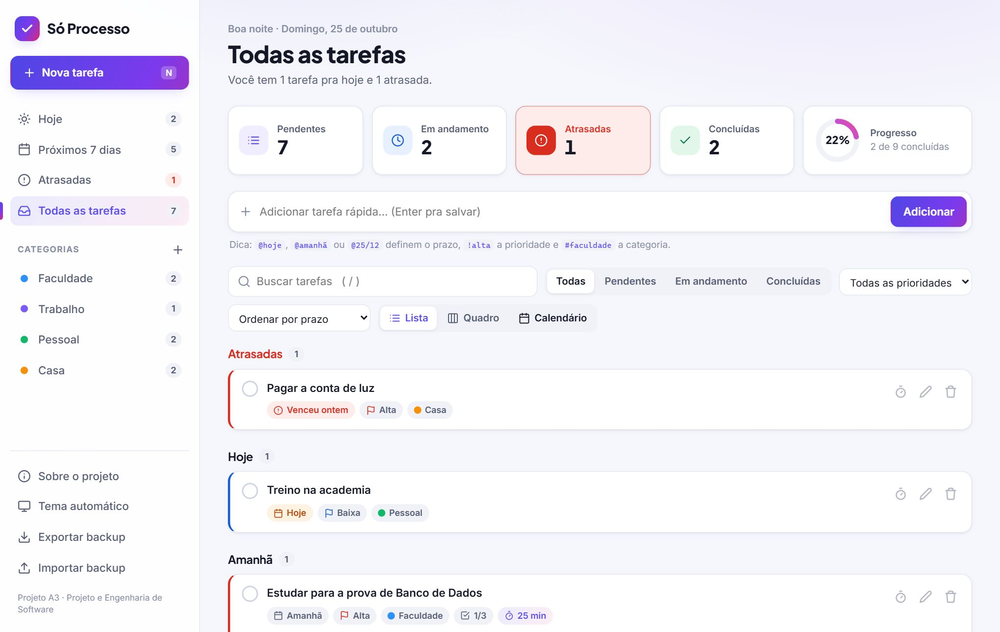
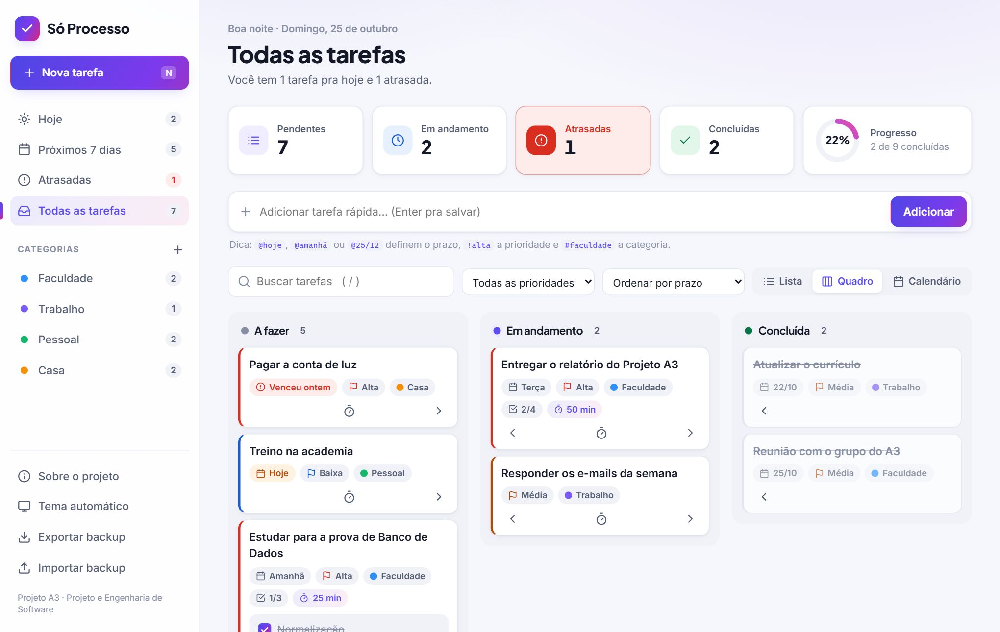
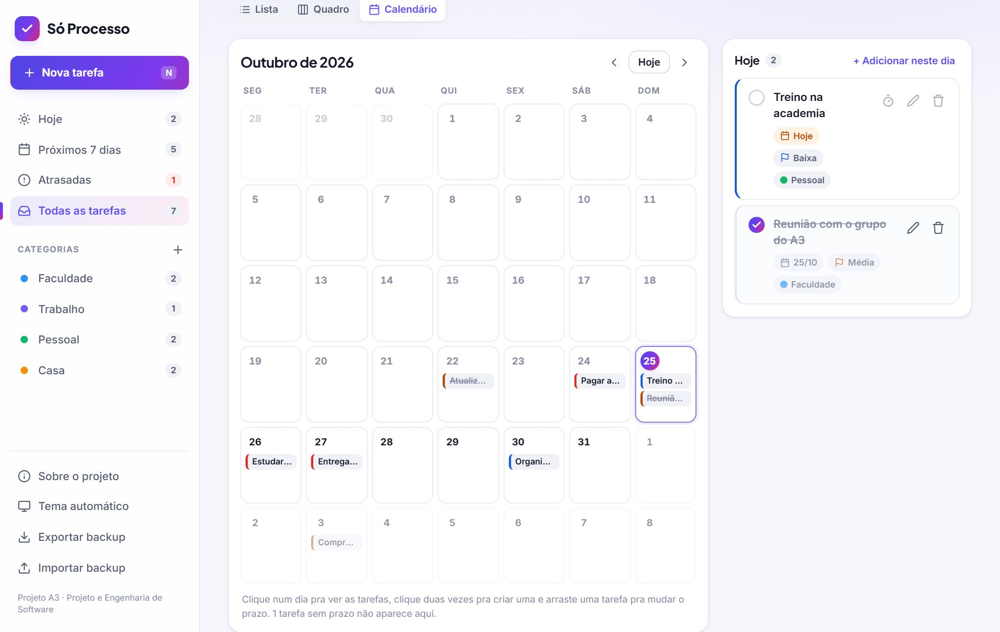
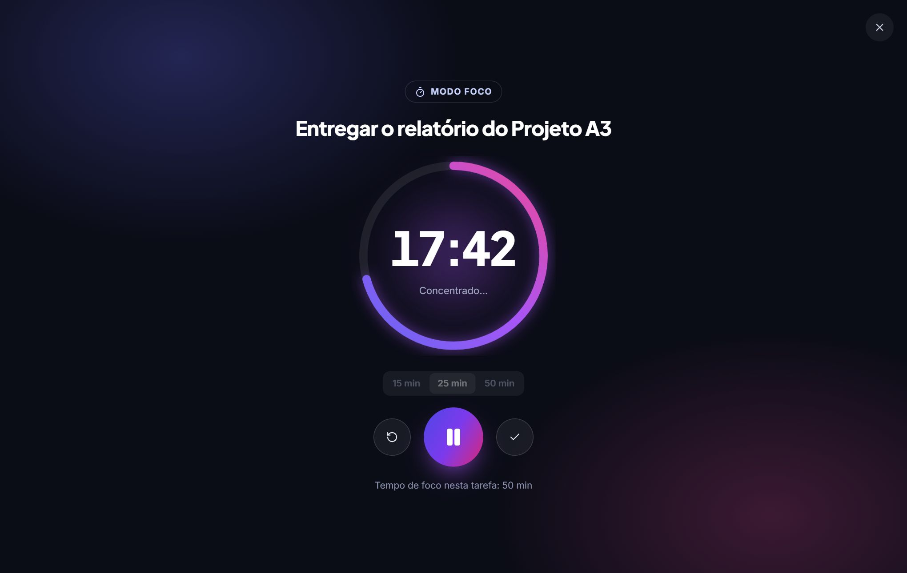
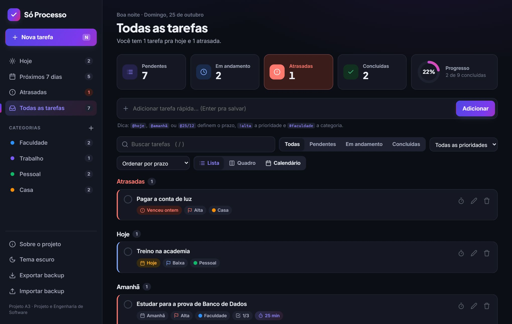

Tarefas esquecidas
Atividades anotadas em vários lugares (ou em lugar nenhum) acabam ficando pra trás.
O Só Processo é uma aplicação simples para cadastrar atividades, definir prazos e prioridades e acompanhar o que já foi concluído, no computador ou no celular.
@amanhã !altaEntregar o relatório do A3
Pagar a conta de luz
Reunião com o grupo
Treino na academia
Muitas pessoas têm dificuldade para organizar suas atividades diárias e acabam esquecendo tarefas ou deixando de cumprir prazos.
Atividades anotadas em vários lugares (ou em lugar nenhum) acabam ficando pra trás.
Sem ver o que vence hoje e o que já atrasou, a entrega só é lembrada quando já é tarde.
Quando tudo parece urgente, fica difícil saber por onde começar o dia.
O Só Processo permite cadastrar atividades, visualizar as tarefas e marcar as que já foram concluídas, por meio de um sistema prático e fácil de utilizar.
Desenvolver um sistema simples que ajude os usuários a organizar e acompanhar suas tarefas.
Estudantes e pessoas que precisam organizar suas atividades diárias.
Os oito requisitos do escopo inicial estão prontos e testados.
Título, descrição, prazo, prioridade, categoria e subtarefas, ou tudo numa linha só.
Lista separada por período ou quadro no estilo Kanban, com contadores em cada visão.
Uma janela com tudo da tarefa, inclusive o checklist de subtarefas.
Com botão de desfazer, caso alguém apague sem querer.
Um clique marca como feita e atualiza o progresso na hora.
Mostra "Hoje", "Amanhã", o dia da semana ou "Atrasada há 3 dias".
Baixa, média ou alta, com cor e ícone pra entender só de olhar.
Pendentes, em andamento ou concluídas, além da busca por texto.
Quinze recursos a mais (RF09 a RF23) pra deixar o dia a dia mais leve.





Digite a tarefa e aperte Enter. Use @amanhã, !alta e #faculdade pra preencher tudo de uma vez.
Defina prazo, prioridade e categoria. A lista se organiza sozinha: atrasadas, hoje, amanhã…
Marque como feita e acompanhe o progresso no painel de resumo, até chegar aos 100%.
O código é separado em camadas e as regras de negócio são verificadas por testes automatizados.
app.js
tarefas.js
localStorage
Projeto e Engenharia de Software
RA 4261212023Projeto e Engenharia de Software
RA 4261216220Projeto e Engenharia de Software
RA 4261215149Entregar um programa funcional que facilite a organização das tarefas diárias e demonstre os conhecimentos adquiridos na disciplina de Projeto e Engenharia de Software.Abrir o Só Processo